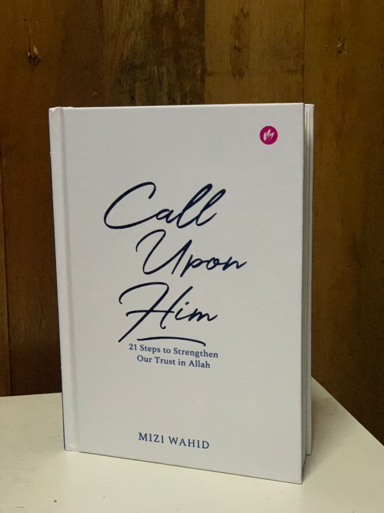

Call Upon Him By Mizi Wahid
In this book, it discuss 21 practical steps on how we can nurture our relationship with Allah through our Du'a. It also teaches us how to strengthen our trust when we are required to stay in faith throughout the long wait after the Du'a has been made.